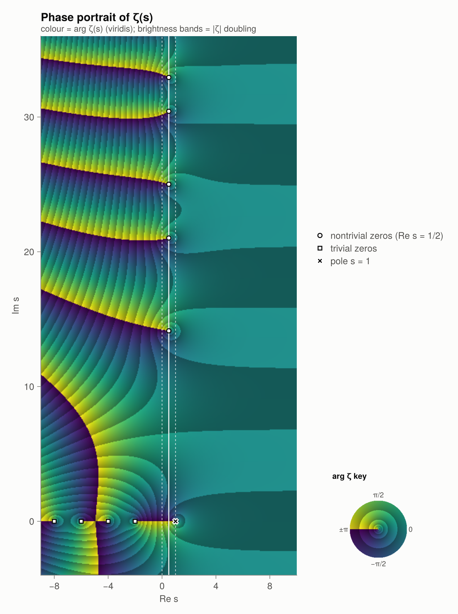

Riemannian.jl
A computational companion to the Riemann Hypothesis.
Riemannian is a Julia package for studying the Riemann Hypothesis (RH) by computing and drawing things. It starts with counting primes, follows Euler and Riemann into the complex plane, and arrives at the zeros of $\zeta(s)$: the trivial ones, the nontrivial ones, how to find and count them, what they say about primes, how they resemble eigenvalues of random matrices, and what has been proved so far.
using Riemannian, CairoMakie
plot_domain_coloring(n = 360)
The hypothesis in one paragraph
The Riemann zeta function is defined for $\operatorname{Re} s > 1$ by
\[\zeta(s) \;=\; \sum_{n=1}^{\infty} \frac{1}{n^{s}} \;=\; \prod_{p\ \text{prime}} \frac{1}{1-p^{-s}},\]
and extends to a meromorphic function on all of $\mathbb{C}$ with a single pole at $s = 1$. It vanishes at $s = -2, -4, -6, \dots$ (the trivial zeros). Every other zero lies in the critical strip $0 < \operatorname{Re} s < 1$.
RH is equivalent to the statement that the primes are distributed as regularly as possible: $\pi(x) = \operatorname{li}(x) + O(\sqrt{x}\log x)$.
What's inside
| Chapter | What you compute | Key functions |
|---|---|---|
| 1. Primes | $\pi(x)$, $\operatorname{li}(x)$, $R(x)$, $\psi(x)$, $M(x)$ | primepi, riemann_R, chebyshev_psi |
| 2. Euler product | $\zeta(2n)$ exactly, sum vs product | zeta_even_exact, euler_product_partial |
| 3. Analytic continuation | $\zeta(s)$ on all of $\mathbb{C}$ | zeta, zeta_em, zeta_borwein, chi_factor |
| 4. Trivial zeros | $\zeta(-2n)=0$, $\zeta(-1) = -\tfrac1{12}$ | trivial_zeros, zeta_negint_exact |
| 5. Nontrivial zeros | $Z(t)$, Gram points, $N(T)$ | hardy_Z, nontrivial_zeros, zero_count |
| 6. Explicit formulas | primes rebuilt from zeros | psi_explicit, primepi_explicit |
| 7. Random matrices | spacings, pair correlation | normalized_spacings, pair_correlation |
| 8. Equivalents | Robin, Lagarias, Li, zero density | robin_violations, li_coefficient |
| 9. de Bruijn–Newman | heat flow of zeros, $\Lambda$ | debruijn_H, heat_flow_zeros |
| 10. History | 34 milestones, 1737–2024 | breakthroughs, timeline, explain |
Every chapter is runnable: the code blocks on these pages are executed when the documentation is built, and every figure you see was produced by them.
Design
- Numerics are self-contained and generic.
zeta,loggamma_c,xi, … are written for anyAbstractFloat, soBigFloatworks out of the box. The only numerical dependency is SpecialFunctions.jl (forexpint). - Plotting is optional. CairoMakie is a weak dependency:
using CairoMakieloads theRiemannianCairoMakieExtextension and allplot_*functions. Without it the package loads in a fraction of a second. - Learning in the REPL.
explain()prints a reading list, andexplain(:topic)prints a short essay that ends with functions to try.